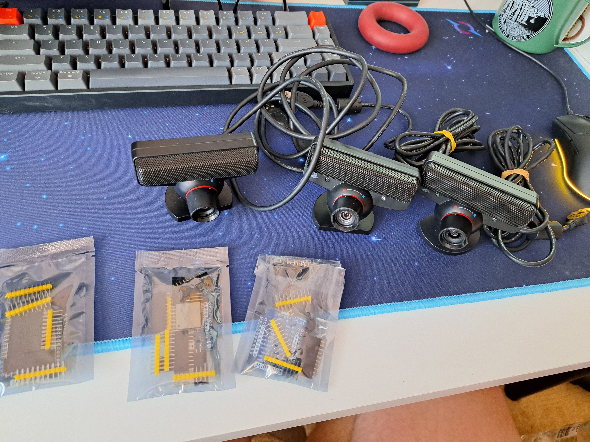
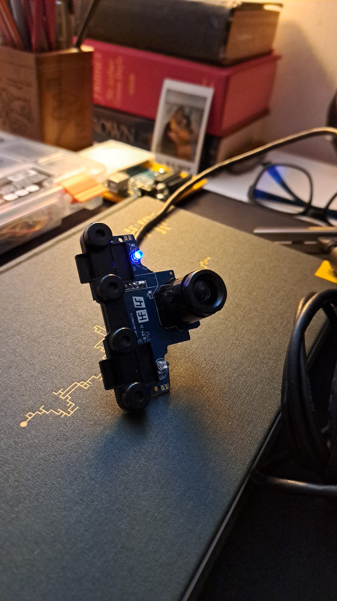
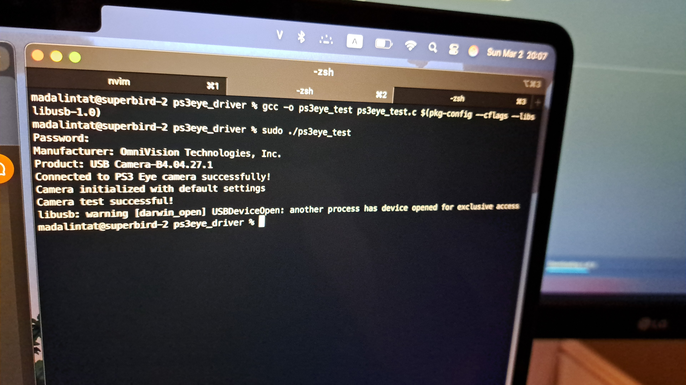
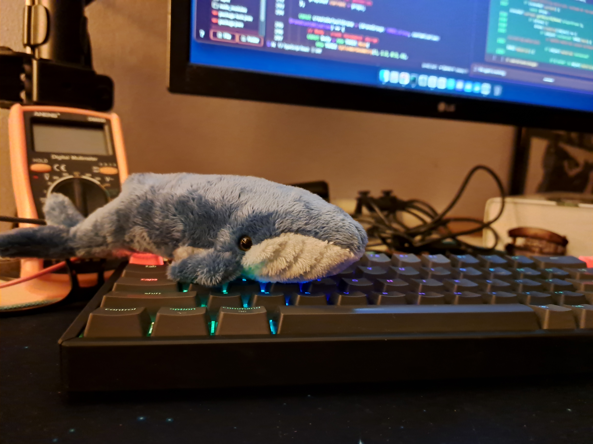

Building a camera driver from scratch - PS3 Eye Camera on Mac Silicon
GitHub Repo: PS3Eye Driver for Macbook Silicon
Lately, I’ve been obsessed with building hardware, and after discovering this video I got so excited I immediately started to get all I needed to build my own drones.
All good until I bought 5 second hand PS3 Eye cameras. I connected one to my Macbook Air M3. Lights on, ‘Alright, nobody sold me broken cameras’ I thought.
Camera nowhere to be found on the system. Searched and apparently this type of camera is not compatible with Macbook Silicon. What was more terrible was that the existing solutions like Macam and PS3EYEDriver were old and unmaintained. Now, what I am going to do with 5 PS3 cameras?
I have two other laptops running Linux and Windows, but there’s no way I’ll use them. I bought a Macbook for all my projects, so I am going to use it no matter what. So that’s how I started the adventure of building a driver from scratch.
I definitely have no experience with this, but luckily I’ve been studying low-level programming and hardware for the last few months, so my brain is warmed up for the challenge.

3 out of the 5 cameras + 3 esp32 wroom for the drones.Goals
- Detect and connect to a PS3 camera;
- Display device information;
- Initialize the camera’s OV7720 sensor;
- Test basic communication functionality.
Make sure you have libusb installed via Homebrew (/opt/homebrew/Cellar/...).
The way that the driver works is this:
Workflow Summary:
- Start
main();- Initialize libusb → set debug level;
- Open PS3 Eye Camera → print device info;
- Check and detach kernel driver if needed;
- Claim interface → initialize camera settings;
- Release interface → reattach kernel driver if needed;
- Clean up and exit.

PS3 Eye camera connected to the Macbook Air M3Headers and Constants: libusb (installed via Homebrew on MacOS) and USB Vendor ID and Product ID specific to the camera.
#include <stdio.h>
#include <stdlib.h>
#include "/opt/homebrew/Cellar/libusb/1.0.27/include/libusb-1.0/libusb.h"
#define PS3EYE_VID 0x1415 // Vendor ID for PS3 Eye
#define PS3EYE_PID 0x2000 // Product ID for PS3 Eye
Find more details here.
These are the register addresses for the OV7720 camera sensor.
#define OV_GAIN 0x00 // Gain control
#define OV_BLUE 0x01 // Blue channel gain
#define OV_RED 0x02 // Red channel gain
#define OV_GREEN 0x03 // Green channel gain
#define OV_EXPOSURE 0x04 // Exposure control
#define OV_FREQ 0x05 // Clock frequency
1. Program Start
int main() {
libusb_context *ctx = NULL;
libusb_device_handle *dev_handle = NULL;
int ret;
Here, two key variables are declared:
-
ctx: A pointer to a libusb context (initially NULL), used to manage the USB session.
-
dev_handle: A pointer to a device handle (initially NULL), used to interact with the PS3 Eye.
-
ret: An integer to store return values for error checking.
2. Initialize libusb: Sets up the library to communicate with USB devices
ret = libusb_init(&ctx);
if (ret < 0) {
printf("Failed to initialize libusb: %s\n", libusb_error_name(ret));
return 1;
}
The libusb_init(&ctx) function initializes the libusb library and creates a context (ctx) for USB operations.
-
If successful (ret == 0), the program continues.
-
If it fails (ret < 0), it prints an error (e.g., “Failed to initialize libusb: LIBUSB_ERROR_NO_MEM”) and exits with return 1.
3. Set Debug Level: Helps with debugging by enabling verbose output from libusb
libusb_set_option(ctx, LIBUSB_OPTION_LOG_LEVEL, LIBUSB_LOG_LEVEL_INFO);
-
This optional call sets the libusb logging level to INFO, so you might see diagnostic messages in the terminal.
-
Always executes (no error check here) and continues to the next step.
4. Open PS3 Eye Device: Establishes a connection to the PS3 Eye camera
dev_handle = libusb_open_device_with_vid_pid(ctx, PS3EYE_VID, PS3EYE_PID);
if (dev_handle == NULL) {
printf("Could not find/open PS3 Eye device. Check connection and permissions.\n");
libusb_exit(ctx);
return 1;
}
-
Searches for a USB device with Vendor ID 0x1415 and Product ID 0x2000 (PS3 Eye) and tries to open it.
-
If successful, dev_handle gets a valid handle, and the program continues.
-
If it fails (dev_handle == NULL), it prints an error (e.g., “Could not find/open PS3 Eye device…”) and exits after cleaning up with libusb_exit(ctx).
5. Print Device Info: Confirms the device is recognized and connected
print_device_info(dev_handle);
void print_device_info(libusb_device_handle *dev_handle) {
unsigned char str_desc[256];
libusb_get_string_descriptor_ascii(dev_handle, 1, str_desc, sizeof(str_desc));
printf("Manufacturer: %s\n", str_desc);
libusb_get_string_descriptor_ascii(dev_handle, 2, str_desc, sizeof(str_desc));
printf("Product: %s\n", str_desc);
printf("Connected to PS3 Eye camera successfully!\n");
}
-
Retrieves and prints the manufacturer string (e.g., “Sony”).
-
Retrieves and prints the product string (e.g., “PS3 Eye”).
-
Prints a success message.
-
Executes fully and returns to main().
6. Check Kernel Driver: Ensures libusb has exclusive access to the device
if (libusb_kernel_driver_active(dev_handle, 0)) {
printf("Kernel driver active, detaching...\n");
ret = libusb_detach_kernel_driver(dev_handle, 0);
if (ret < 0) {
printf("Failed to detach kernel driver: %s\n", libusb_error_name(ret));
libusb_close(dev_handle);
libusb_exit(ctx);
return 1;
}
}
-
Checks if macOS has attached a default driver to the PS3 Eye (interface 0).
-
If no driver is active (libusb_kernel_driver_active returns 0), skips this block.
-
If a driver is active:
- Prints “Kernel driver active, detaching…”.
-
Attempts to detach it with libusb_detach_kernel_driver().
-
If detachment fails (ret < 0), prints an error and exits after cleanup.
-
If successful, continues.
7. Claim Interface: Allows the program to send commands to the camera
ret = libusb_claim_interface(dev_handle, 0);
if (ret < 0) {
printf("Failed to claim interface: %s\n", libusb_error_name(ret));
libusb_close(dev_handle);
libusb_exit(ctx);
return 1;
}
-
Claims interface 0 of the PS3 Eye for libusb control.
-
If successful (ret == 0), continues.
-
If it fails (ret < 0), prints an error (e.g., “Failed to claim interface: LIBUSB_ERROR_ACCESS”) and exits after cleanup.
8. Initialize Camera: Configures the camera sensor with basic settings
ret = initialize_camera(dev_handle);
if (ret < 0) {
printf("Failed to initialize camera: %s\n", libusb_error_name(ret));
} else {
printf("Camera test successful!\n");
}
int initialize_camera(libusb_device_handle *dev_handle) {
int ret;
ret = send_ov_reg(dev_handle, OV_EXPOSURE, 120);
if (ret < 0) return ret;
ret = send_ov_reg(dev_handle, OV_GAIN, 20);
if (ret < 0) return ret;
ret = send_ov_reg(dev_handle, OV_RED, 128);
if (ret < 0) return ret;
ret = send_ov_reg(dev_handle, OV_GREEN, 128);
if (ret < 0) return ret;
ret = send_ov_reg(dev_handle, OV_BLUE, 128);
if (ret < 0) return ret;
printf("Camera initialized with default settings\n");
return 0;
}
-
Calls send_ov_reg() multiple times to set: Exposure to 120
-
Gain to 20: Red, Green, Blue gains to 128 (neutral values)
-
Each send_ov_reg() uses libusb_control_transfer() to send commands to the OV7720 sensor.
-
If any send_ov_reg() fails (ret < 0), returns the error code immediately.
-
If all succeed, prints “Camera initialized with default settings” and returns 0.
-
Back in main():
-
If ret < 0, prints an error.
-
If ret == 0, prints “Camera test successful!”.
-
9. Release Interface: Cleans up by freeing the interface for other processes
libusb_release_interface(dev_handle, 0);
-
Releases the claimed interface 0.
-
Executes and continues (no error check here, assumes success).
10. Re-attach Kernel Driver: Restores the device to its original state
libusb_attach_kernel_driver(dev_handle, 0);
-
Re-attaches the kernel driver if it was detached earlier.
-
Executes and continues (no error check here).
11. Clean up and Exit: Ensures proper cleanup of resources
libusb_close(dev_handle);
libusb_exit(ctx);
return 0;
-
libusb_close(dev_handle): Closes the device handle.
-
libusb_exit(ctx): Frees the libusb context.
-
return 0: Exits the program successfully.
-
Always executes as the final step.
Compile
gcc -o ps3eye_test ps3eye_test.c -I/opt/homebrew/Cellar/libusb/1.0.27/include/libusb-1.0 -L/opt/homebrew/Cellar/libusb/1.0.27/lib -lusb-1.0
Run
./ps3eye_test

Succesfully connected the PS3 Eye camera to Macbook Air M3Limitations
- Only tests basic connectivity and register values;
- Doesn’t capture or display video;
- Hardcoded settings may need adjustment;
- Error handling is minimal.
What’s next?
This driver was created to prove I didn’t waste my money on those PS3 cameras, or my Macbook, for that matter. Mission accomplished! But that’s not all.
Now, the main goal is getting these cameras to capture video directly on my Macbook. After that, it’s time to integrate them with OpenCV and everything run smoothly.
Until next time!

This is Wolly, the Whale. He helped me in building the driver.